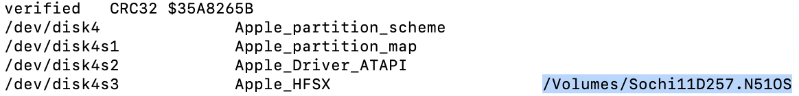

Preparations
We will need to do two things to prepare. We will back up some files needed to boot iOS 7 and create a tar containing the contents of the filesystem image.
We will start by decrypting the filesystem image
Keys for decryption of firmware components and proper component names can be found at The Apple Wiki
The root filesystem image is the largest dmg file inside the IPSW
dmg extract encrypted.dmg rw.dmg -k key
We will now need to convert the image to UDZO format
dmg build rw.dmg ios7.dmg
You will now have a read-only decrypted filesystem image
hdiutil attach ios7.dmg
Take note of the mount point, highlighted in the example below
We need to enable ownership for the tar to have correct ownership
sudo diskutil enableOwnership mountpoint
Now you can create the tar
sudo gtar -cvf ios7.tar -C mountpoint .
Now you will need to connect to the device to backup some files. Start off by creating an iproxy tunnel:
iproxy 2222 22
You should see "waiting for connection". Let this run in the background and open a new terminal window to transfer files
These are the files you will need to backup to your computer for booting:
Password should be "alpine"
scp -P 2222 root@localhost:/System/Library/Caches/apticket.der ./apticket.der
scp -P 2222 root@localhost:/usr/standalone/firmware/sep-firmware.img4 ./sep-firmware.img4
scp -r -P 2222 root@localhost:/usr/local/standalone/firmware/Baseband ./Baseband
scp -r -P 2222 root@localhost:/var/keybags ./keybags